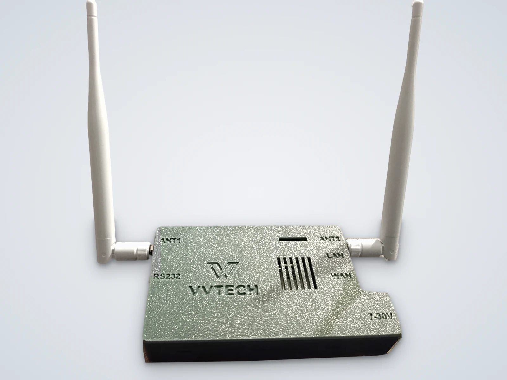
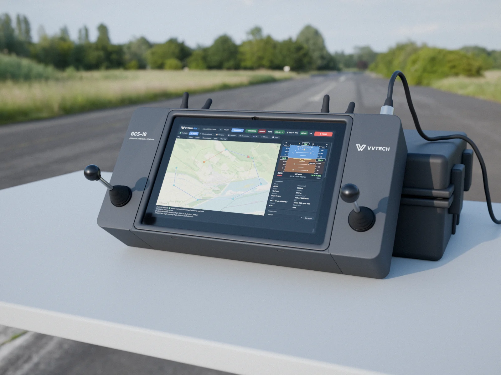

High-Speed Mid-Range Telemetry Link
Telemetry radio unit
A unit for transferring telemetry and data between a system and ground equipment. It has two antenna ports, a serial and a network interface, and a wide supply voltage range, so it can be integrated without additional converters.
| Antenna ports | 2 × SMA (ANT1, ANT2) |
|---|---|
| Serial interface | RS-232 |
| Network | Ethernet, LAN and WAN |
| Power supply | 7–30 V DC |
| Data rate and range | on request |

High-Speed LTE Control Unit
Control unit with an LTE link
A unit for monitoring and control over the mobile network. It combines an LTE link and a GNSS receiver in one housing, with separate antenna ports.
| Link | LTE |
|---|---|
| Positioning | GNSS |
| Antenna ports | MAIN (LTE), GNSS |
| Connector | threaded circular connector |

VVTECH GCS
Ground station software
Software for monitoring a flight in real time. On one screen the operator sees the mission map with the trajectory and waypoints, a HUD with the artificial horizon, flight data and link status, and the whole flight is recorded for later analysis.
| Display | mission map, HUD with artificial horizon, flight data |
|---|---|
| Vehicle link | MAVLink 2 over UDP |
| Mission plan | waypoints, altitudes, execution status |
| Recording | flight log for later analysis |

Remote monitoring system
Field devices and a monitoring application
A system for monitoring devices deployed in the field, without mains power and without a permanent connection. Measurements arrive at a server, and the duty operator sees the status of every device in the application.
| Device power | solar, with a battery |
|---|---|
| Link | GSM, with SMS as a fallback |
| Measurements | battery voltage, gas pressure, GPS position |
| Maintenance | remote software update |
Devices and software in use
Devices and software we use in development and testing.
| Name | Type | Purpose | Status |
|---|---|---|---|
| Navigation and guidance unit | device | Inertial sensors and a GNSS receiver with a processor for state estimation and guidance algorithms. | in use |
| Flight data recorder | device | High-rate recording of inertial measurements and system status, for processing after testing. | in use |
| 6- and 7-DOF flight simulator | software | Trajectory, stability and dispersion analysis, Monte Carlo studies and comparison with measurements. | in use |
| Flight reconstruction software | software | Processing of on-board records and radar measurements: trajectory, aerodynamic coefficients, deviations from the model, report. | in use |
In development
Devices and software we are working on or preparing. The images in this section are visualisations. Status and schedule are available on request.

Portable ground station
Device in development
A rugged operator terminal for field use: mission map, flight data and link status on one screen, with two joysticks and switches for manual control.
| Display | 10.1 inch touchscreen |
|---|---|
| Control | two spring-return joysticks |
| Switches | four toggle switches on the top side |
| Connector | threaded circular connector, 6 contacts |
| Power supply | 12 V DC |
| Status | in development |

AT-10 — antenna tracker
A two-axis head with a motor on each axis, azimuth and elevation, carrying a directional antenna on a tripod. It follows the vehicle using telemetry data and keeps the link at longer ranges.
planned
GNR-10 — GNSS reference station
A ground reference station with two antennas on a rigid beam, at a fixed spacing. It sends RTK corrections to the vehicle, in the manner of GBAS, for high-accuracy positioning.
planned
MS-10 — weather station
Wind, pressure, temperature and humidity at the test site. The data goes to the ground station and into test data processing.
planned| Project | Type | Purpose | Status |
|---|---|---|---|
| Hardware-in-the-loop (HIL) test bench | equipment and software | Real-time flight simulation connected to the actual guidance unit, to verify algorithms before flight testing. | planned |
| Inertial sensor calibration software | software | Determination of scale factors, biases and axis misalignments from rate-table measurements. | planned |
Other projects
Industrial projects we have worked on:
- Motion platform with a touch screen — a two-axis platform guiding a tool along a programmed raster, with in-house control electronics.
- Production line automation — phase monitoring, part tracking and alarms on one screen.
- Modernisation of older equipment — relay logic replaced with microcontroller control, with fault reporting.
- Business applications — work orders, stock and reports adapted to the customer's process.